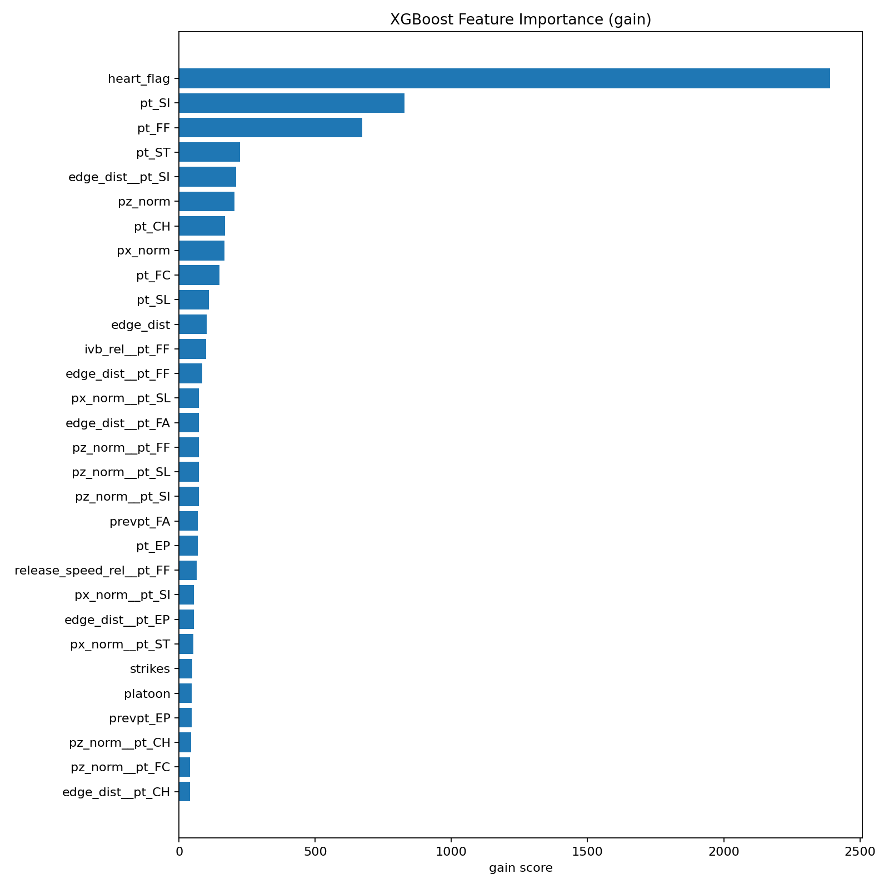
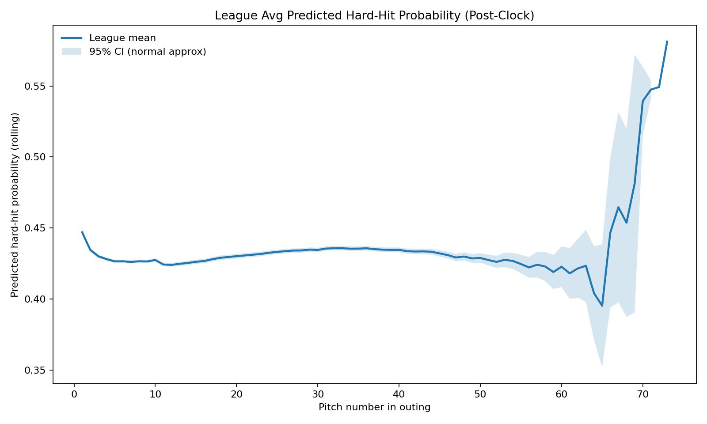
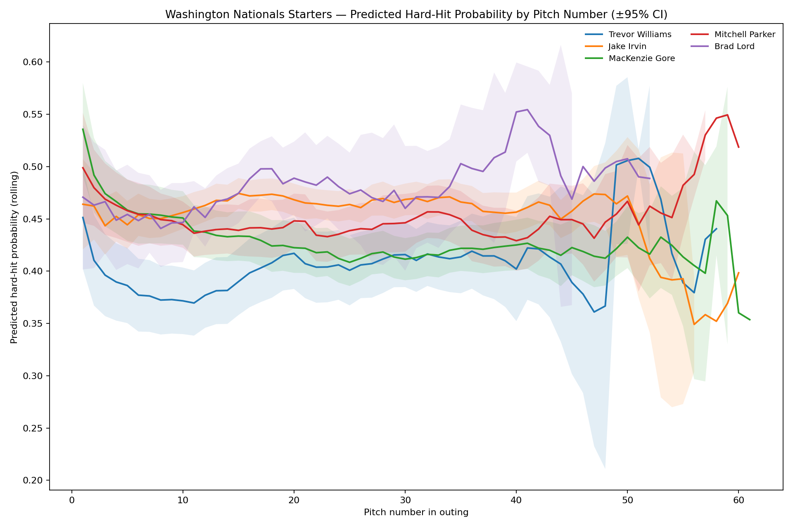
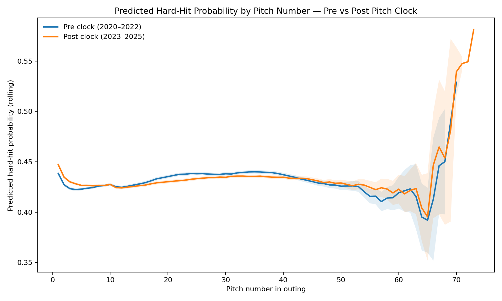
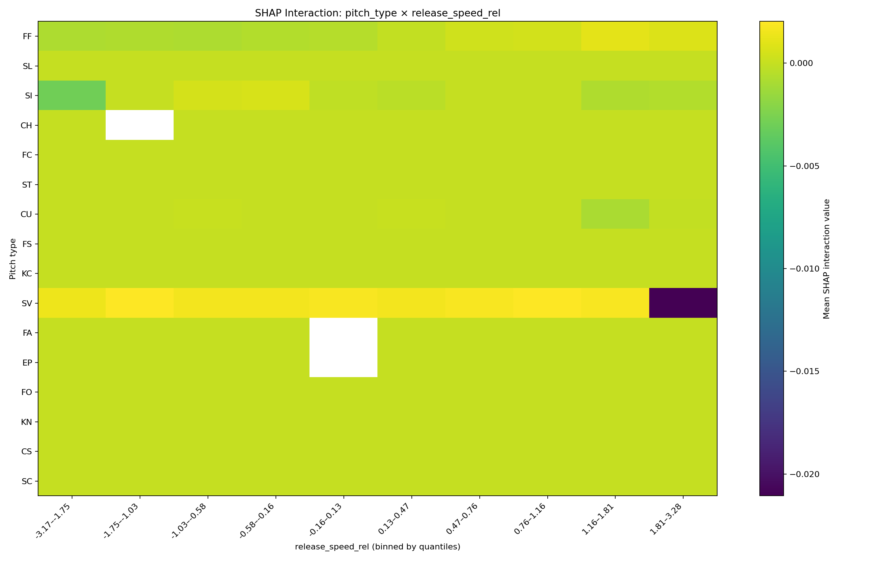
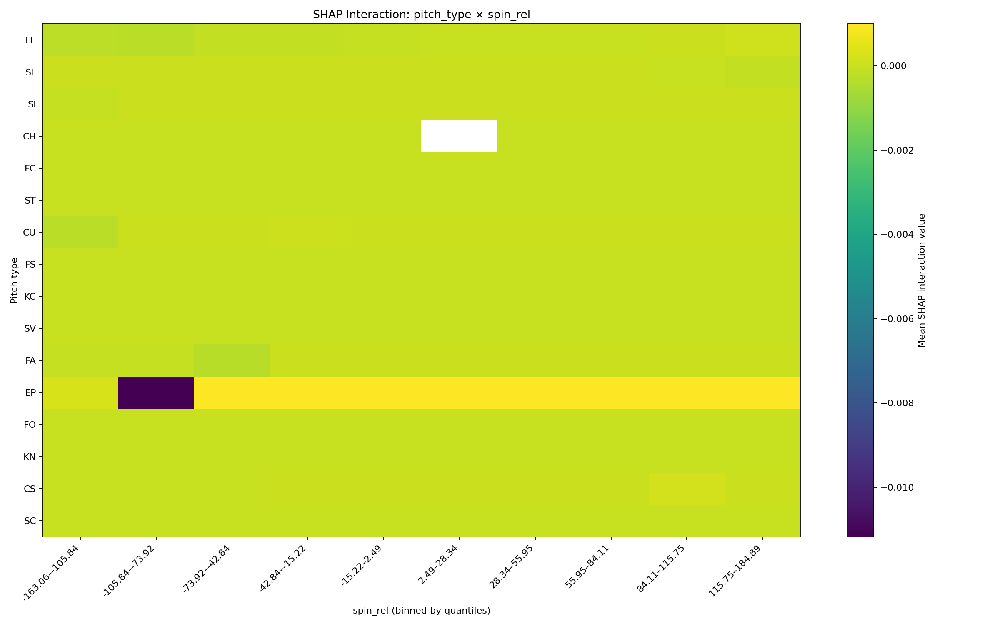
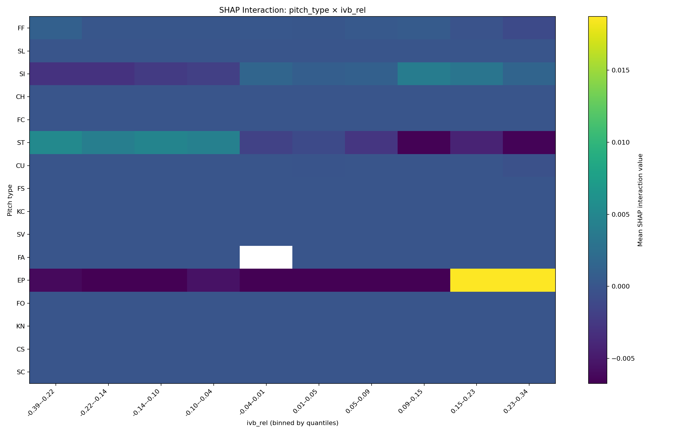
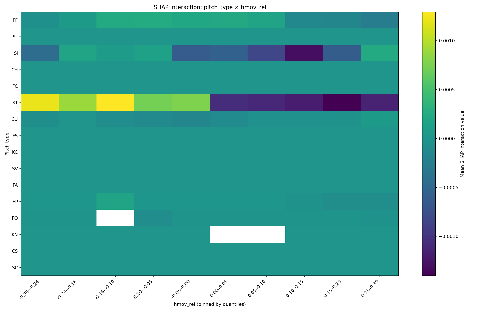

# Filenames
DATA_POST = "statcast_2023_2025.csv"
DATA_PRE = "statcast_2020_2022.csv"
# Modeling knobs
EV_THRESH = 95.0 # hard-hit threshold for labels in training
ROLL_WINDOW = 10 # smoothing within outings
MAX_PITCH_IDX = 110 # last pitch number to chart
TOP_IMPORTANCE = 30
MIN_OUTINGS_CI = 2
SHAP_SAMPLES = 800
SEED = 42Do Pitchers Fatigue Faster With the Pitch Clock?, Python
Pitching
Fatigue
Machine Learning
Python
TL;DR
I modeled pitch quality across pitch counts within individual starts to see whether the addition of the pitch clock made pitchers fade earlier. Comparing 2020–2022 vs 2023–2025, the fatigue curve is strikingly similar, including one curious blip: a consistent uptick in pitch quality right before ~pitch 65, followed by a steep drop.
“Pitch quality” here means predicted offensive production given the pitch (velocity, movement, location, context), not what actually happened. That keeps defense, luck, batter quality, and times-through-the-order out of it.
Setup & Parameters
Note: You’ll need xgboost, scikit-learn, and (optionally) shap. If they’re missing, run:
pip install xgboost scikit-learn shapApproach
- I trained a binary hard-hit classifier (XGBoost) on swing events using the post-clock era (2023–2025).
- I used rich and highly-granular features: release speed/spin/movement (relative to pitcher/pitch-type baselines/archetypes), location, count/leverage, platoon, and simple sequence context.
- I converted model outputs to probability of hard contact and smooth within each outing by pitch number.
- I compared the league curve pre-clock vs post-clock using the same model and features.
- For sanity checks, I looked at feature importance and a few SHAP interaction heatmaps.
Load utilities from my module
import os
import numpy as np
import pandas as pd
import matplotlib.pyplot as plt
from pitch_quality_model import (
load_or_scrape, build_features, train_xgb_no_es,
league_curve_with_ci, nationals_starters_curve_with_ci,
shap_interaction_heatmaps, era_compare_plot,
save_xgb_importance_with_fallback
)
np.random.seed(SEED)Data
df_post = load_or_scrape(DATA_POST, start_date="2023-01-01", end_date="2025-12-31")
df_pre = load_or_scrape(DATA_PRE, start_date="2020-01-01", end_date="2022-12-31")
df_post.shape, df_pre.shape[INFO] Found existing CSV: statcast_2023_2025.csv. Loading instead of scraping...
[INFO] Found existing CSV: statcast_2020_2022.csv. Loading instead of scraping...((2101326, 118), (1811735, 119))Feature engineering & training (post-clock only)
X, y, df_swings = build_features(df_post.copy(), EV_THRESH)
len(y), int(y.sum()), X.shape(1001600, 142402, (1001600, 201))# Time-based split similar to the script’s robust approach
dates = pd.to_datetime(df_swings["game_date"])
cutoff = dates.quantile(0.75)
train_mask = (dates < cutoff).to_numpy()
test_mask = (dates >= cutoff).to_numpy()
X_train, y_train = X.loc[train_mask], y.loc[train_mask]
X_test, y_test = X.loc[test_mask], y.loc[test_mask]
clf = train_xgb_no_es(X_train, y_train)
from sklearn.metrics import roc_auc_score, average_precision_score, classification_report
p_test = clf.predict_proba(X_test)[:, 1]
y_pred = (p_test >= 0.5).astype(int)
metrics = pd.DataFrame({
"ROC_AUC":[roc_auc_score(y_test, p_test)],
"PR_AUC":[average_precision_score(y_test, p_test)]
}).round(3)
metrics[INFO] XGBoost version: 3.0.4
[INFO] Training sizes -> pos: 104,112, neg: 646,823, scale_pos_weight: 6.213
[INFO] Trained trees: 800| ROC_AUC | PR_AUC | |
|---|---|---|
| 0 | 0.722 | 0.289 |
precision recall f1-score support
0 0.928 0.574 0.709 212375
1 0.242 0.753 0.366 38290
accuracy 0.601 250665
macro avg 0.585 0.663 0.537 250665
weighted avg 0.823 0.601 0.657 250665
What drives the model? (feature importance)
_ = save_xgb_importance_with_fallback(clf, X.columns.tolist(), topn=TOP_IMPORTANCE,
outpath="xgb_feature_importance_top30.png")
"Saved xgb_feature_importance_top30.png"[INFO] Booster attributes keys: [] ...
[INFO] Importance[gain] entries: 183
[INFO] Importance[weight] entries: 183
[INFO] Importance[cover] entries: 183
[INFO] Sample importance keys: ['release_speed_rel', 'spin_rel', 'ivb_rel', 'hmov_rel', 'hmov_abs_rel', 'release_dev_rel', 'px_norm', 'pz_norm', 'edge_dist', 'heart_flag']
[INFO] Saved: xgb_feature_importance_top30.png'Saved xgb_feature_importance_top30.png'
Takeaway: The model leans on relative pitch characteristics (e.g., speed_rel, spin_rel, IVB_rel) plus location/edge-distance and some count/sequence context—exactly what I want for “how good was this pitch, given what it is?”
League fatigue curve (post-clock)
I turned the classifier into a fatigue proxy by tracking predicted hard-hit probability by pitch number in the outing (smoothed with a rolling window).
p_all = clf.predict_proba(X)[:, 1]
_agg_post = league_curve_with_ci(df_swings, p_all, MAX_PITCH_IDX, ROLL_WINDOW,
path="league_curve2.png",
title="League Avg Predicted Hard-Hit Probability (Post-Clock)")
"Saved league_curve2.png"[INFO] Saved: league_curve2.png'Saved league_curve2.png'
Nationals starters
_ = nationals_starters_curve_with_ci(df_swings, p_all, MAX_PITCH_IDX, ROLL_WINDOW,
MIN_OUTINGS_CI, path="nationals_starters_curve.png")
os.path.exists("nationals_starters_curve.png")[INFO] Name-like columns found for WSH: ['player_name', 'pitch_name']
[INFO] Nationals target pitcher IDs resolved: {592866: 'Trevor Williams', 663623: 'Jake Irvin', 669022: 'MacKenzie Gore', 680730: 'Mitchell Parker', 695418: 'Brad Lord'}
[INFO] Saved: nationals_starters_curve.pngTrue
Pre vs Post pitch clock — the comparison
I rebuilt features for 2020–2022, aligned to the trained columns, and plotted both league curves using the same model.
era_compare_plot(clf, X.columns.tolist(), build_features,
pre_df=df_pre.copy(), post_df=df_post.copy(),
ev_thresh=EV_THRESH, max_pitch_idx=MAX_PITCH_IDX,
roll_window=ROLL_WINDOW, outpath="era_compare_curve.png")
"Saved era_compare_curve.png"[INFO] Saved: era_compare_curve.png
[INFO] Era comparison — baseline (first 10 pitches):
Pre clock mean baseline: 0.4262
Post clock mean baseline: 0.4300
[INFO] First pitch index where curve exceeds baseline by:
+1pp -> Pre: 1, Post: 1
+2pp -> Pre: 68, Post: 67'Saved era_compare_curve.png'
My read: Interestingly, the clock didn’t meaningfully shift the onset of fatigue in this spec. The curves are nearly on top of each other for the entirety of the plot. In both curves, pitch quality increases in the first ~10 pitches of the game, likely as pitchers settle-in, then plateau until a curious mini-boost in pitch quality right before pitch ~65, followed by a steep and extreme decline in pitch quality.
SHAP interaction heatmaps
If shap is installed, this will write several PNGs like shap_heatmap_release_speed_rel.png, which look at pitch_type × relative metric interactions.
shap_interaction_heatmaps(clf, X, df_swings, shap_samples=SHAP_SAMPLES, seed=SEED)
sorted([f for f in os.listdir('.') if f.startswith('shap_heatmap_')])[:4][INFO] SHAP interaction sample size: 800 rows, features: 201
[INFO] Saved: shap_heatmap_release_speed_rel.png
[INFO] Saved: shap_heatmap_spin_rel.png
[INFO] Saved: shap_heatmap_ivb_rel.png
[INFO] Saved: shap_heatmap_hmov_rel.png['shap_heatmap_hmov_rel.png',
'shap_heatmap_ivb_rel.png',
'shap_heatmap_release_speed_rel.png',
'shap_heatmap_spin_rel.png']



Notes & caveats
- This model learns pitch quality, not outcomes. It intentionally ignores defense/park/luck.
- If you add new seasons, keep
freeze: autoin_quarto.ymlso heavy chunks only re-run when code changes. - For reproducibility, keep raw CSVs and this page in the repo; the site rebuilds the figures end-to-end.